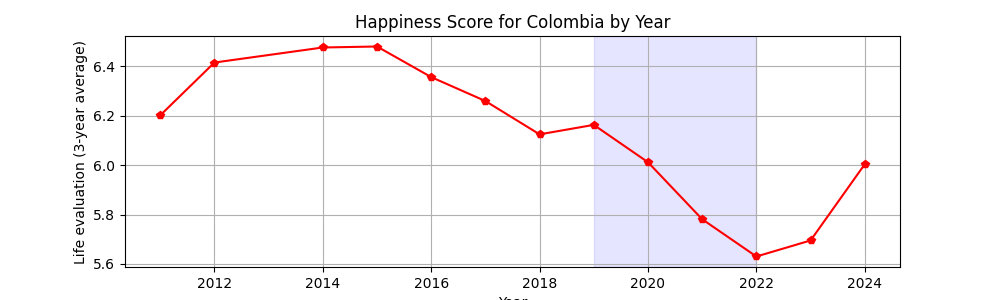
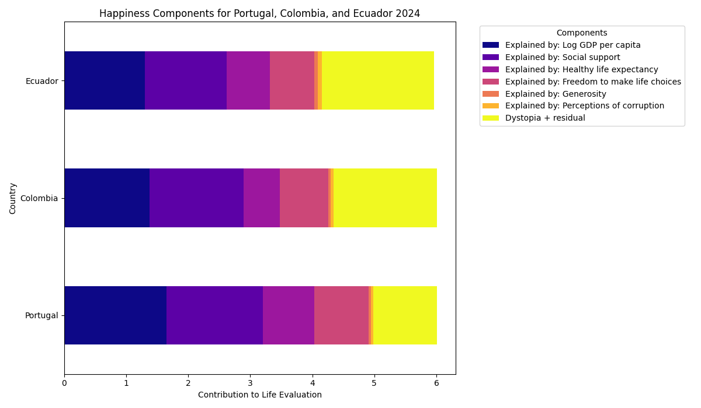

1. Evolución del nivel de felicidad (2011–2024)

Esta gráfica detalla la fluctuación de la satisfacción vital. Tras un periodo de bonanza y estabilidad (2011-2015), Colombia inició un descenso crítico en 2016. La caída acentuada entre 2020 y 2022 refleja el impacto de crisis externas e internas, aunque la reciente recuperación demuestra la resiliencia inherente de la sociedad colombiana.
2. Desglose de Factores de Bienestar

El bienestar en Colombia no depende de un solo factor, sino de una arquitectura compleja:
3. Perspectiva en América Latina (2024)

Colombia mantiene una posición competitiva media. El análisis sugiere que la felicidad en la región está más ligada a la estabilidad social y seguridad que al éxito macroeconómico aislado, explicando por qué países con instituciones más fuertes lideran la tabla.
4. Comparativa Internacional

Al comparar con Portugal, se observa una brecha en seguridad institucional y riqueza. Frente a Ecuador, Colombia muestra una ventaja en redes de apoyo social. Este contraste resalta que, aunque culturalmente ricos, los retos económicos y la corrupción siguen siendo el principal lastre.
5. El Estándar Global: Países Líderes

Finlandia, Dinamarca e Islandia demuestran que la felicidad es una construcción estructural. Su éxito radica en una combinación de baja corrupción, confianza interpersonal absoluta y sistemas públicos que eliminan la incertidumbre económica.